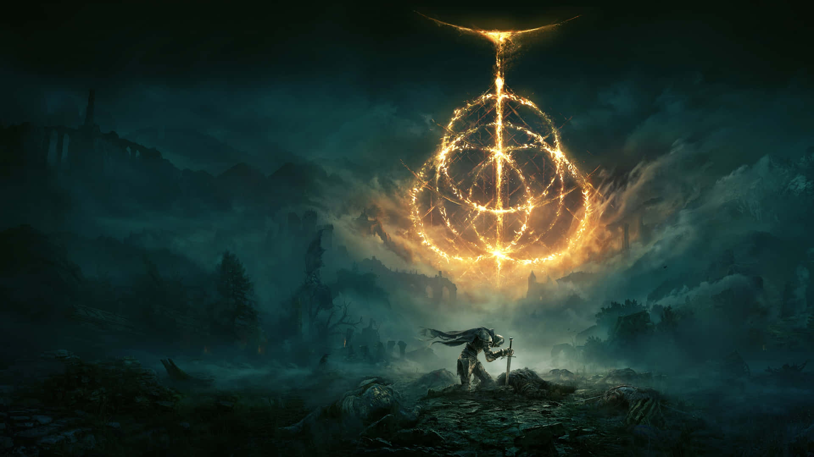

Elden Ring é um jogo eletrônico de RPG de ação em mundo aberto desenvolvido pela FromSoftware e publicado pela Bandai Namco Entertainment. Foi lançado originalmente em 25 de fevereiro de 2022 para PS4, PS5, Xbox One, Xbox Series X|S e PC. Direção: Hidetaka Miyazaki História / Mundo: George R.R. Martin contribuiu com a construção do mundo e lore. Gênero: Ação RPG (terceira pessoa) Modos: Single-player e multiplayer online (coop/PvP).
Elden Ring se passa nas Intermédias, um mundo regido pelo Anel Prístino, símbolo da ordem divina criada pela deusa Rainha Marika. Ao quebrar o Anel, Marika provoca a Ruína, espalhando suas partes entre os semideuses, que entram em guerra e levam o mundo à decadência. O jogador é um Maculado, um guerreiro exilado que retorna após ser guiado pela Graça. Sua missão é derrotar os semideuses, recuperar as Grandes Runas e alcançar a Árvore Áurea. Durante a jornada, descobre-se que Marika e Radagon são a mesma entidade e que a Vontade Maior controla o mundo por meio da Ordem Áurea. No final, o Maculado decide o destino das Intermédias: restaurar a ordem antiga, criar uma nova ou libertar o mundo do domínio dos deuses.
>Imagem ilustrativa do jogo Elden Ring, desenvolvido pela FromSoftware.
Pagina criada na aula de programação - 2026